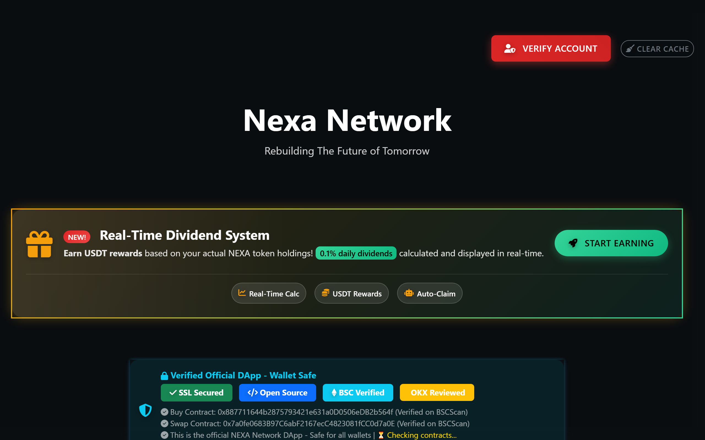
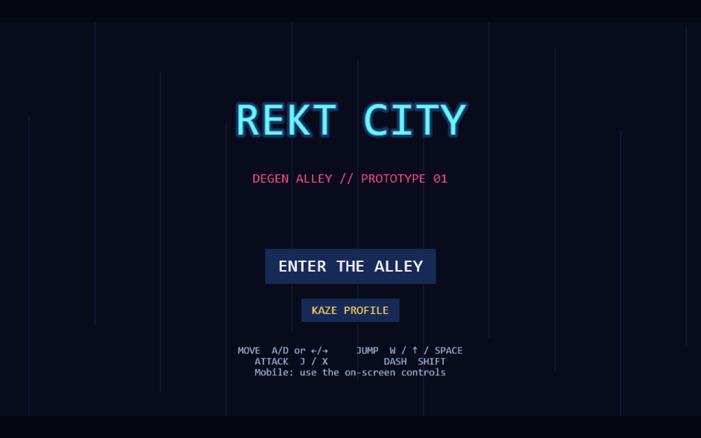

Tobiloba. Full-stack developer who ships to production.
Six-plus years building for the web — from WordPress to live production
systems: a 24/7 delivery marketplace, a retail POS & device-financing
SaaS, fintech wallets, Telegram intelligence pipelines, and Solana trading
automation. Not demos. Production.
Role: solo build — design, frontend, backend, payments, deploys
A full multi-role marketplace running 24/7 in Abeokuta: customer, vendor,
rider and admin apps plus native Android builds. Real-time order tracking
on live maps, Paystack payments, dedicated virtual account wallets,
push notifications, and a zero-downtime deploy pipeline.
4 user roles, one codebase
DVA wallet funding via Paystack + Titan
Verify-before-cutover FTP deploys — site never goes down
Role: solo build — design, frontend, backend, payments, print infra
A production retail platform built for 7linkz Phone Village: a keyboard-first
counter POS, IMEI-level stock control, Paystack checkout that only saves a
sale after payment confirms, BNPL device financing with MDM remote lock,
staff RBAC, end-of-day reports, and thermal printing routed through a
Firestore print queue.
React 19ViteFirebasePaystackPWAFCMNode print server
Data pipelineVPS-deployed
Crypto Monitor
Role: solo build — Python pipeline, VPS deployment, ongoing ops
A Telegram intelligence system running on a VPS: watches groups for
keywords, contract addresses and scam patterns; mines "can't sell"
complaints to surface bad tokens; classifies and backfills findings
through a bot UI.
PythonTelethonSQLitesystemd / nohupSSH automation
Trading automation
Solana Trading Bot
Role: solo build — strategy filters, execution engine, audit logging
Automated memecoin trader for pump.fun / letsbonk launches — token
scanning, safety filters, and full trade logging/auditing to CSV and
JSON for post-trade review.
Node.js@solana/web3.jsSPL TokenREST APIs
Web3
Solana Wallet App
Role: solo build — Next.js app, wallet adapter integration, UI
Next.js wallet client with Phantom adapter integration, auto-connect,
and real-time SOL balance — clean Tailwind UI on the App Router.
Next.js 14TypeScriptTailwindWallet Adapter
DeFi · BSCdApp
nexa-network

NEXA Network — Swap & Migration dApp
Role: solo build — Web3 frontend, contract integration, wallet UX
A DeFi migration platform on Binance Smart Chain: holders swap legacy
tokens into a new verified contract through a guided swap flow, plus a
direct token purchase path and a real-time USDT dividend dashboard.
Multi-wallet connect (MetaMask, TrustWallet, SafePal, WalletConnect),
gas-aware transactions, and swap fees/deadlines enforced on-chain.
Legacy → new token migration at fixed ratio — fees & deadline enforced on-chain
Real-time USDT dividend dashboard with auto-claim tracking
BSCScan-verified contracts · gas estimation · mobile wallet support
ethers.jsWeb3ModalWalletConnectBSCBootstrap 5Vite
Game
rekt-city

Rekt City
Role: solo build — Phaser 3 engine work, scenes, UI
A browser game built on the Phaser 3 engine with a typed, componented
codebase — asset pipeline, scene architecture, and a Vite build.
Phaser 3TypeScriptVite
Smart contracts + AI
TobiCoin & Agent Tooling
Role: solo build — Solidity contract, Python agent services
An ERC-20 token written on OpenZeppelin contracts, alongside Python
service tooling: a Gemini-powered CLI agent and HTTP gateway/proxy
services for programmatic access.
SolidityOpenZeppelinPythonGemini API
02
What I can build for you
Everything below maps to something already running in production — you're buying proven systems, not promises.
Delivery & marketplace apps
Multi-role platforms like GO7 — customer, vendor, rider & admin apps, live tracking, payments. One codebase, web + Android.
POS & inventory SaaS
Retail systems like Investory — stock down to IMEI level, staff roles & approvals, EOD reports, thermal printing.
Payments & fintech
Paystack checkout, webhooks, wallets & dedicated virtual accounts — verify-then-save flows that never lose a sale.
Bots & automation
Telegram monitors, trading automation, data pipelines — deployed on your VPS and built to run unattended.
Web3 & contracts
Solana integrations, wallet adapters, SPL & ERC-20 tokens — from contract to connected UI.
WordPress & business sites
6+ years of client sites, WooCommerce stores, custom themes, plugins and ongoing maintenance.
03
Stack
Tools I use to ship — chosen for what survives production, not what's trendy.
Frontend
React · Next.js · TypeScript · Vite · Tailwind · MUI · Framer Motion · Zustand · React Query
Six years on WordPress, then a leap into full-stack JavaScript, Web3, and live production systems.
2025 — now
GO7 Delivery Platform
Founded, built, and run a live 24/7 delivery marketplace — customer, vendor,
rider, and admin apps, Paystack payments and DVA wallets, live map tracking,
native Android builds, and zero-downtime deploys. Over a year in production and counting.
2026
Telegram intelligence pipeline
Deployed a VPS-hosted crypto monitor: keyword and contract-address detection
across groups, complaint mining, classifiers, and backfill tooling with a bot UI.
2026
Retail SaaS — Investory
Designed and shipped a full POS & inventory platform for a phone retail
business: Paystack checkout, BNPL device financing with MDM lock, staff
permissions, EOD reporting, and thermal cloud printing.
2026
Web3, AI & games
Solana wallet client (Next.js + Phantom), an ERC-20 token on OpenZeppelin,
Gemini-powered agent tooling, and a Phaser 3 browser game.
2025
Solana trading automation
Built an automated memecoin trader for pump.fun / letsbonk — token scanning,
safety filters, and full trade audit logging.
2019 → · 6+ yrs
WordPress — where it started
Over six years hands-on: client sites, custom themes, plugin work,
WooCommerce stores, and the hosting/maintenance grind that teaches you
what "production" actually means.
05
How I work
Six-plus years of WordPress — client sites, themes, plugins, WooCommerce —
taught me what it means to own something in production. I build products
the way they have to be built to stay alive: small safe fixes over
rewrites, real data over placeholders, and deploys that never take the
site down. GO7 has users ordering right now — that's the standard
everything gets held to.
My range runs from pixel to protocol: React frontends and Android builds,
Firebase backends and payment webhooks, Python automation on a VPS, and
smart contracts on Solana and EVM. If a system has a frontend, a backend,
a payment rail, or a chain — I've probably wired it.
Ship it live. A project isn't done until it's deployed and verified.
Smallest safe fix. Production code gets surgical edits, not rewrites.
Real data only. No demo content hiding behind empty states.
Zero downtime. New assets land before the cutover, always verified.
References from 7linkz Phone Village & GO7 vendors available on request.
Let's build something that stays up.
Open to freelance builds, contract work, and collaborations on marketplaces, fintech, Web3, or automation.